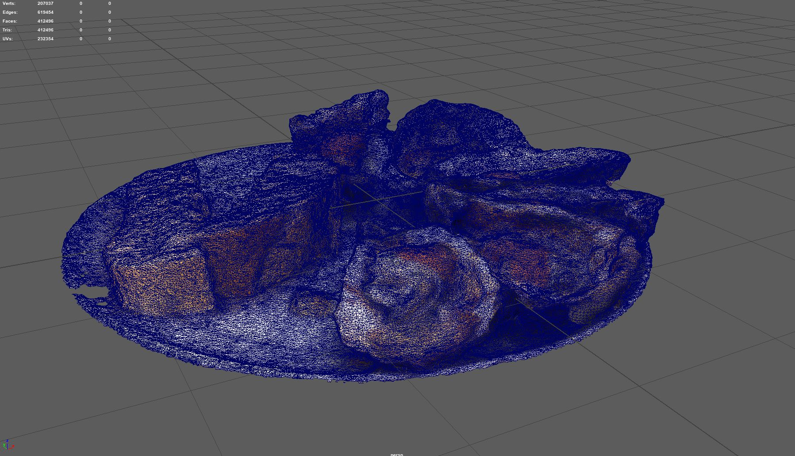
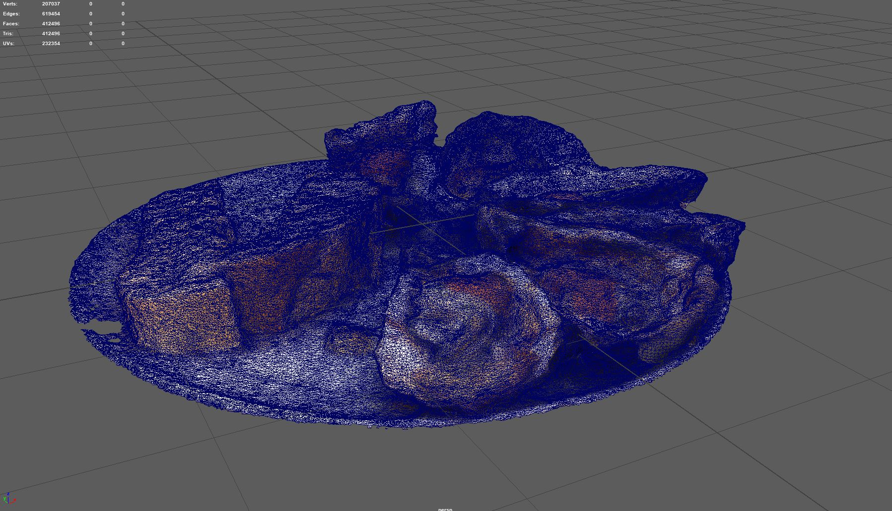

3D Art & Aesthetics Week Still Life
 I usually don't really like dealing with grabbing assets from online, cleaning them up, modifying them to fit correctly, and other issues that might pop up but I was pretty tight on time with this one.

I made most of models quickly but I eventually went and grabbed a couple things that I could source like the oysters which were a 3D scan that I split up, a lemon and nuts that I grabbed from quixel bridge.
Getting the assets to line up correctly and scaled correctly was probably the most time consuming part besides perfecting the lighting.
The cloth was made with nCloth, it wasn't perfect and if I had more time, I might have sculpted it in zbrush or made it in marvelous designer.
For the lighting, I mainly used the big glass as reference to try to place them correctly as well as the shine off the backdrop.
Overall, I think I was pretty happy with the result. If I spent some more time on it I would like to clean up a bunch of the models and add more details, maybe try out some more custom materials and filters.
I usually don't really like dealing with grabbing assets from online, cleaning them up, modifying them to fit correctly, and other issues that might pop up but I was pretty tight on time with this one.

I made most of models quickly but I eventually went and grabbed a couple things that I could source like the oysters which were a 3D scan that I split up, a lemon and nuts that I grabbed from quixel bridge.
Getting the assets to line up correctly and scaled correctly was probably the most time consuming part besides perfecting the lighting.
The cloth was made with nCloth, it wasn't perfect and if I had more time, I might have sculpted it in zbrush or made it in marvelous designer.
For the lighting, I mainly used the big glass as reference to try to place them correctly as well as the shine off the backdrop.
Overall, I think I was pretty happy with the result. If I spent some more time on it I would like to clean up a bunch of the models and add more details, maybe try out some more custom materials and filters.
home
while (!deck.isInOrder()) {
print 'Iteration ' + i;
deck.shuffle();
i++;
}
print 'It took ' + i + ' iterations to sort the deck.';